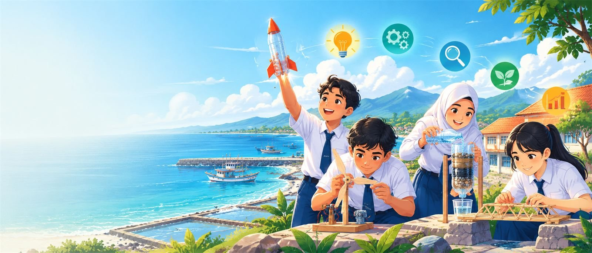
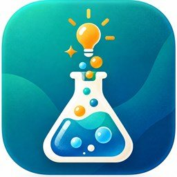
NalarSTEMKak Nala tidak pernah memberi jawaban. Ia bertanya balik dan menuntun murid sampai menemukan jawabannya sendiri.
Semangat tut wuri handayani di zaman AI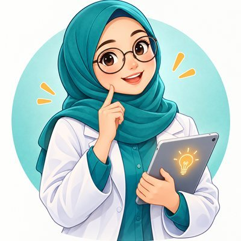
Rapor turun, kelas belum mengaktifkan nalar
Tiga tantangan yang harus dijawab
Lima langkah aksi dengan NalarSTEM
Dampak, faktor pendukung, dan kendala
Fasilitas teknologi sangat baik, tetapi kualitas pembelajaran justru menurun.
Keteraturan suasana kelas dan disiplin positif. Penurunan terbesar di komponen kualitas pembelajaran.
Instruksi adaptif, panduan guru, aktivitas interaktif, dan iklim belajar terbuka.
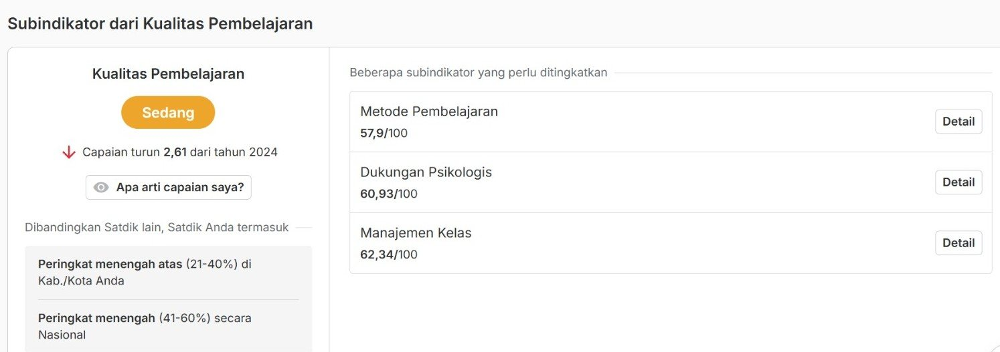
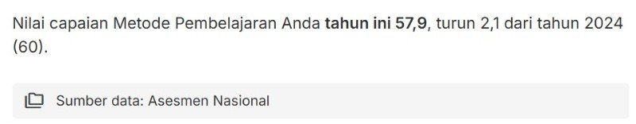
turun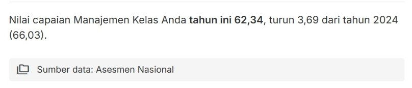
turun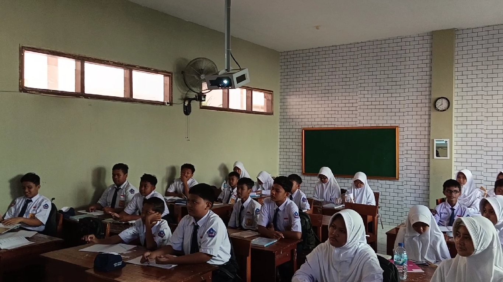
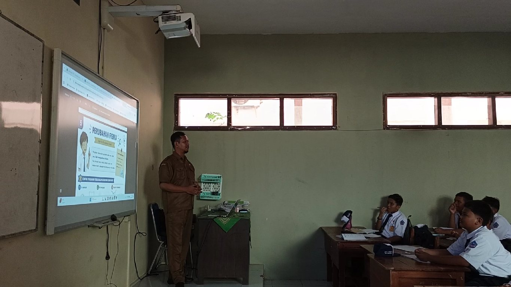
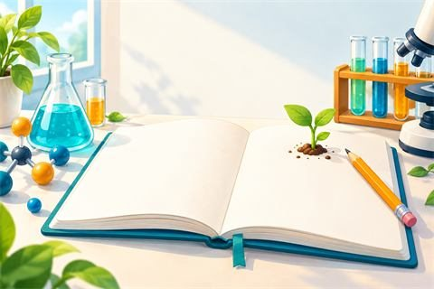
Tiga hal yang harus saya jawab agar setiap murid berpikir dan terlibat.
Metode yang memfasilitasi kemampuan berpikir dan partisipasi murid.
32 murid per kelas tidak mungkin didampingi satu per satu. Saya butuh media yang memantau siapa yang belum terlibat.
AI umumnya langsung memberi jawaban. Saya butuh AI yang menuntun proses berpikir, bukan membuat murid malas berpikir.
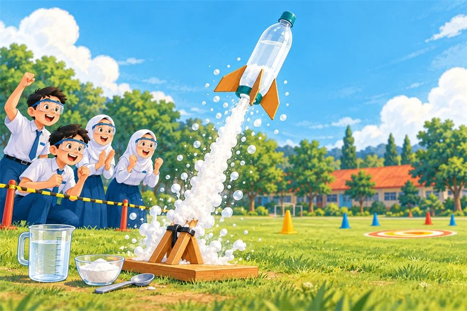
Lima langkah: dari pendekatan STEM sampai berbagi kepada rekan guru.
IPA sebagai alat memecahkan masalah nyata
Aplikasi IPA dengan AI Sokratis Kak Nala
Misi Roket Cuka & Soda Kue pada materi perubahan materi
Peta Jejak Berpikir untuk disiplin positif
Rekan guru dan MGMP IPA Situbondo
Guru menjelaskan, murid mendengarkan lalu menghafal. Praktikum mengikuti langkah tanpa tahu alasannya.
Murid berdiskusi, mencoba, dan mengambil keputusan bersama kelompok.
Masalah yang dijawab, alur belajar, isi misi, aturan perilaku Kak Nala, cara penilaian.
Menuliskan program berdasarkan rancangan. Setiap hasil saya uji dan perbaiki sesuai kebutuhan kelas.
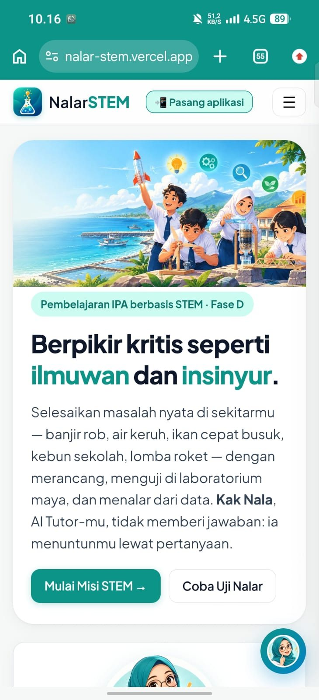
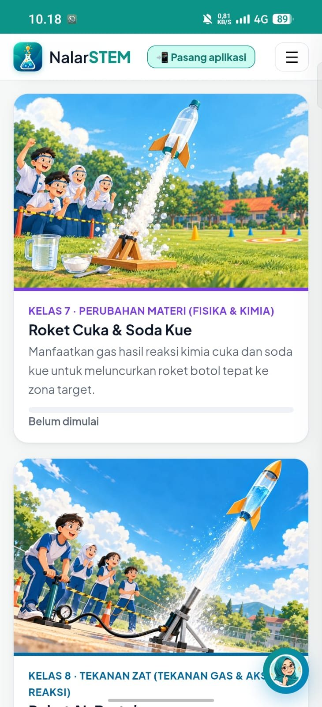
Merancang, menguji, dan memperbaiki solusi
Sesuai Capaian Pembelajaran IPA
Coba berkali-kali tanpa bahan habis dan tanpa risiko
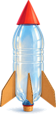
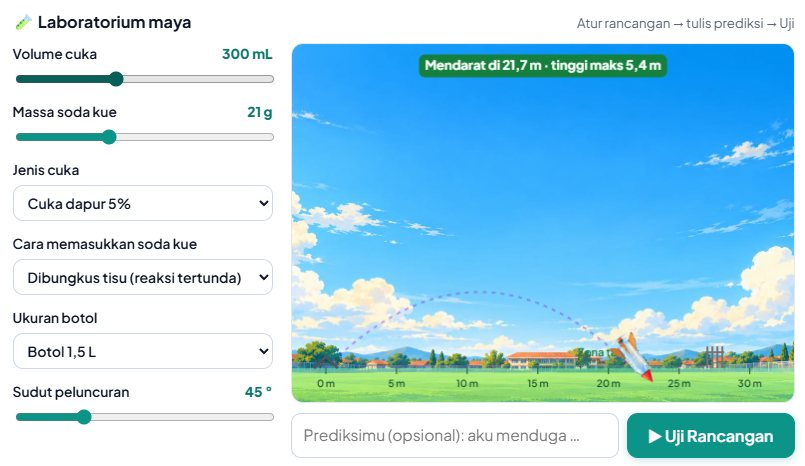
Laboratorium maya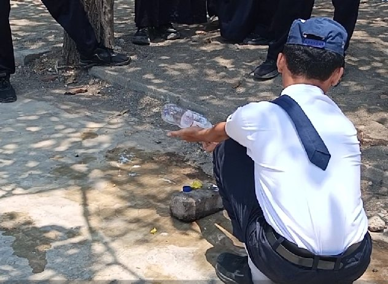
Peluncuran di lapanganBagikan kode kelas kepada murid
Menguji dengan teratur atau sekadar coba-coba?
Berapa langkah selesai, berapa kali bertanya dengan kalimat sendiri
Aplikasi menampilkan daftarnya: disiplin positif
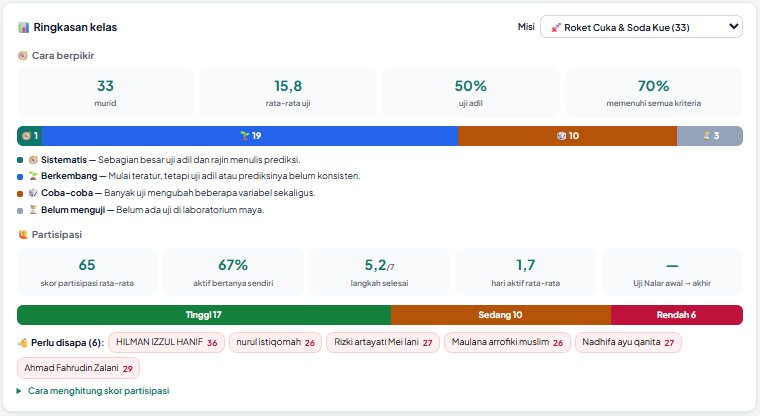
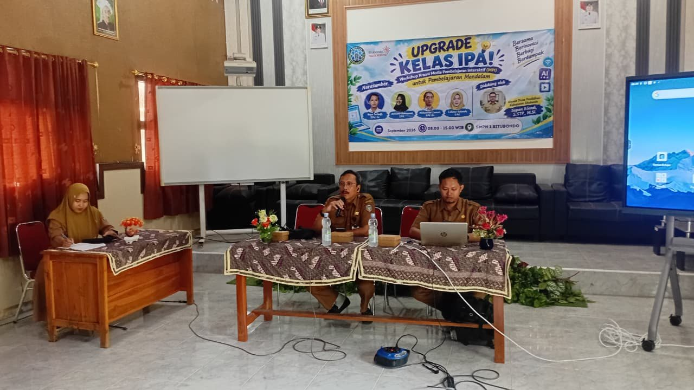
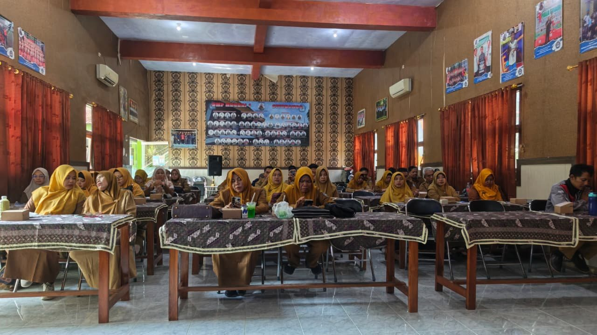
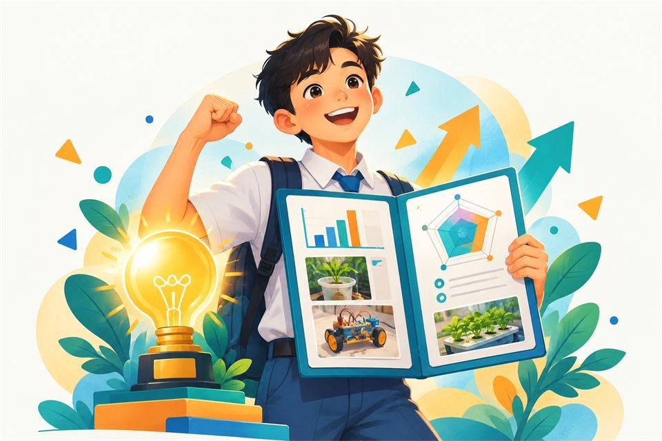
Apa yang berubah pada murid, guru, dan rekan sejawat.
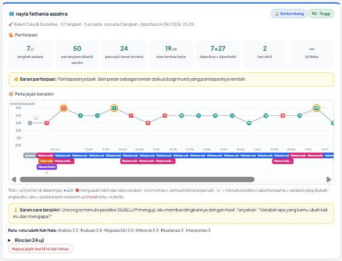
Murid berjalan di depan dengan nalarnya sendiri, sedangkan guru dan teknologi mendorong dari belakang sambil memberi arah.
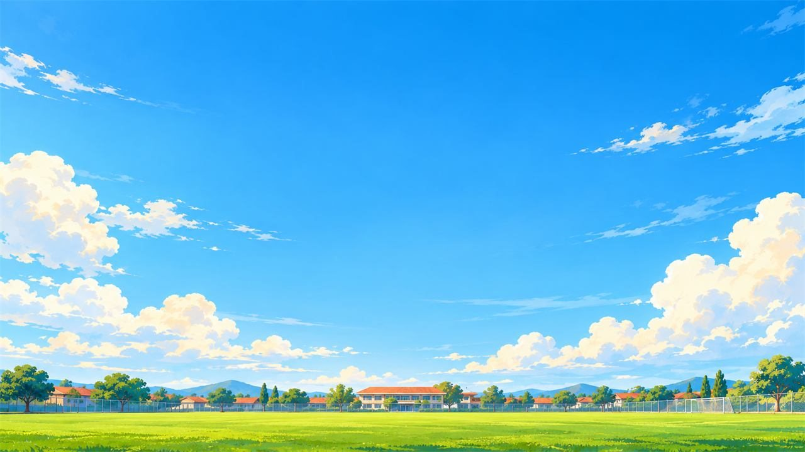
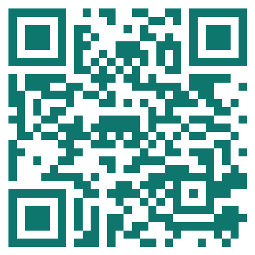
Coba NalarSTEMnalarstem.logisains.my.id